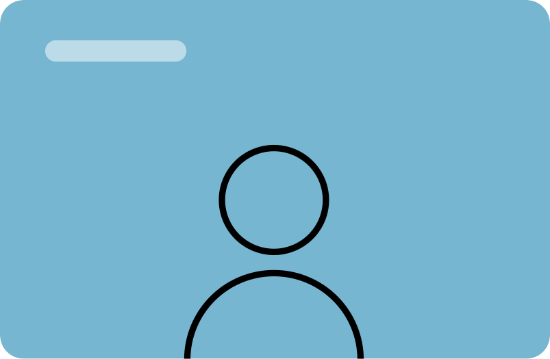
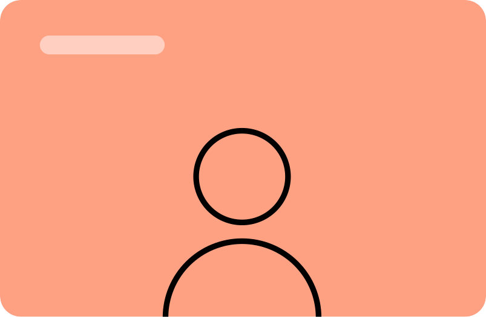
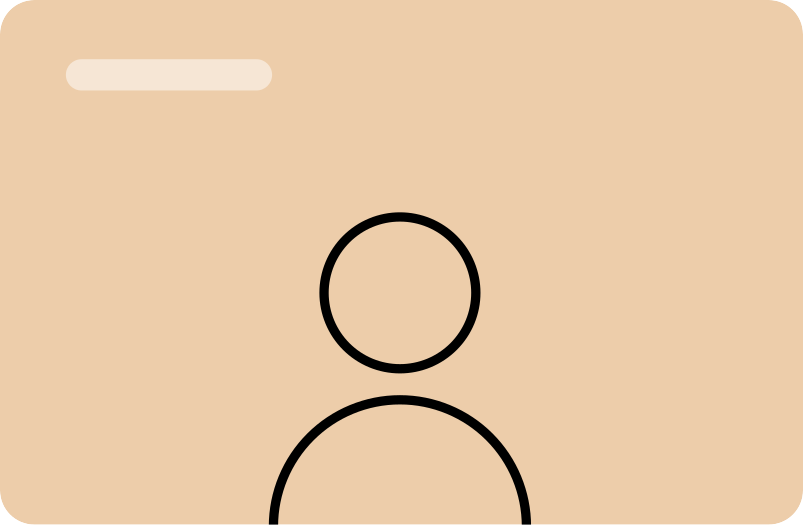
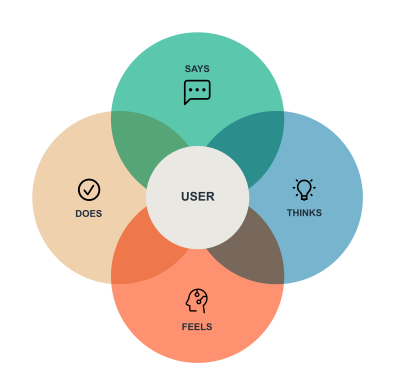
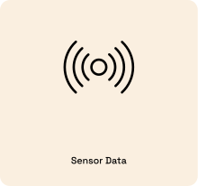
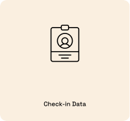
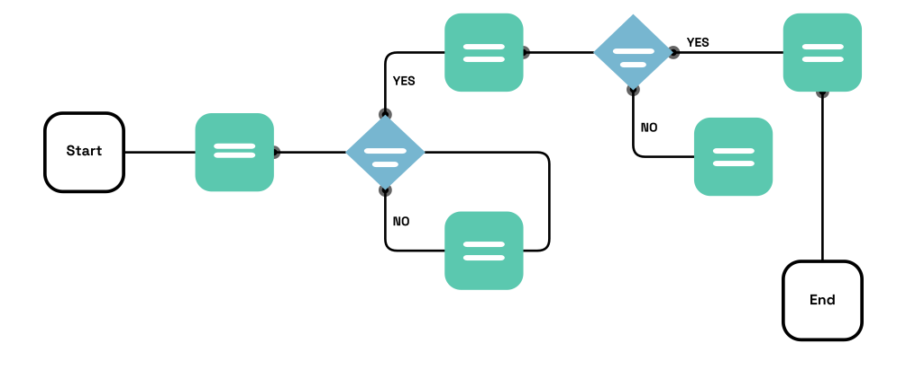
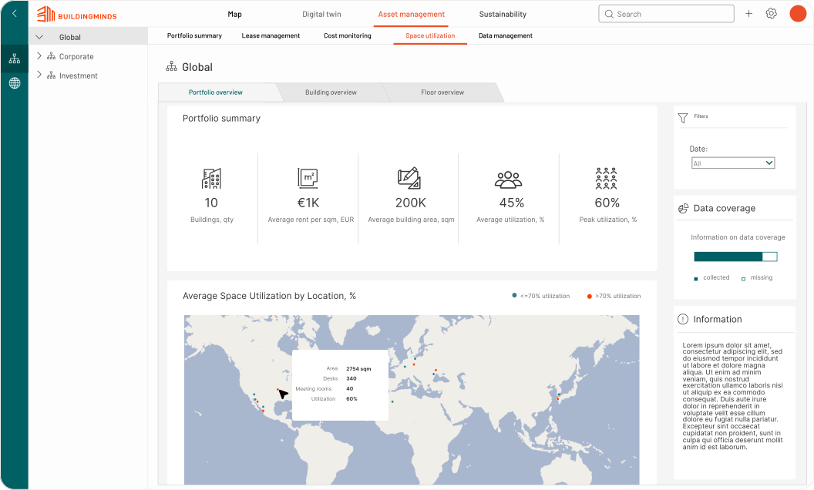
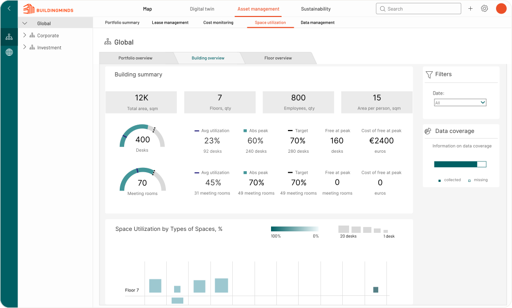
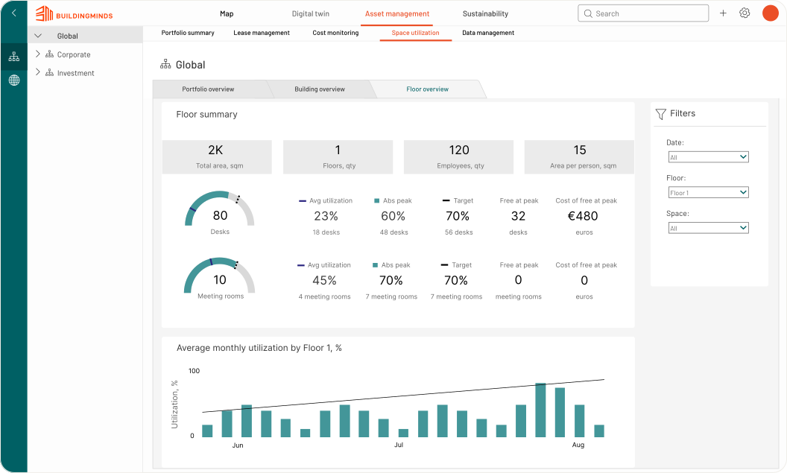

Product design case study
Redesign of the space utilization dashboard to help decarbonize real estate
BuildingMinds is a real estate technology company that helps organizations manage their portfolios sustainably by turning building data into actionable insight. Their platform brings together space, sensor, and booking data to help facility managers understand how buildings are actually being used. I joined as Product Designer to redesign the space utilization dashboard, one of the platform's core modules.
Facility and portfolio managers struggled to understand how efficiently their space was being used across floors and buildings. Utilization data was scattered across sensors, bookings, and manual surveys, making it hard to see where space was underused, where it was overcrowded, and where costs and emissions could be reduced. The existing dashboard presented raw numbers without the context needed to act on them.
We designed a dashboard that lets users move fluidly between portfolio, building, and floor level views, surfacing utilization trends alongside the data behind them. Sensor occupancy, desk and room bookings, and check-in data were combined into a single view, helping teams identify underused space, right-size their footprint, and make more sustainable real-estate decisions.
“Understanding real user needs and pain points helped shape a dashboard that really works for them.”
I interviewed facility managers, portfolio managers, and workplace analysts who used the existing dashboard day to day. These conversations surfaced how they made decisions about space, which numbers they trusted, and where the current tool left them guessing. The interviews shaped the core question the redesign needed to answer: not just how much space is used, but why, and what to do about it.



I grouped interview notes and observations into themes using affinity mapping, which helped the team spot recurring patterns across roles — from a need for cross-building comparisons to confusion around how utilization was actually calculated.


I mapped what users said, thought, felt, and did when working with utilization data, to better understand their motivations and frustrations beyond their literal feature requests. This helped the team see that the real need wasn't more data, but more confidence in the data they already had.
Based on the interviews and mapping exercises, I distilled five recurring user types who would rely on the redesigned dashboard.
The redesigned dashboard combines three sources of occupancy data into one consistent view, so users no longer have to reconcile numbers from separate systems.


User stories
I created user stories that capture the needs and goals of each persona, helping to ensure that the Space Utilization Dashboard meets their specific requirements and enhances their workflow.
As a facility manager, I want to…
As a property manager, I want to…
The dashboard was designed around three levels of detail, letting users zoom from a high-level portfolio overview down to the specifics of a single floor without losing context.
Portfolio level
Compare utilization across an entire real-estate portfolio to spot underperforming buildings.
Building level
Drill into a single building to see how utilization varies across floors and space types.
Floor level
Inspect individual desks and rooms on a floor plan to understand day-to-day usage.
I mapped out each step of user's journey from Asset management page in to Space utilization page through each dashboard. User flows helped me determine the layout of each dashboard, ensuring users could complete their tasks without friction.
I created low-fidelity prototypes using basic sketching tools and Figma to quickly visualize and iterate on core concepts and user flows before refining them into high-fidelity designs.
I mapped out the system logic and decision branches to clearly define how users transition between states and actions within the application.

Portfolio overview
The portfolio view gives a bird's-eye comparison of utilization across all buildings, helping managers quickly identify which locations need attention.

Building detail
Drilling into a building surfaces floor-by-floor utilization trends, combining sensor, booking, and check-in data in one chart.

Floor detail
At the floor level, an interactive plan shows individual desks and rooms, letting users see exactly where space goes unused.

Redesigning the space utilization dashboard reinforced how much good data visualization depends on understanding the decisions people are actually trying to make. By grounding the design in interviews, empathy maps, and affinity mapping, we moved past raw numbers toward a tool that helps facility and portfolio managers act with confidence. It deepened my appreciation for combining qualitative research with data-heavy interfaces, and for designing at multiple levels of scale without losing the user's sense of place.